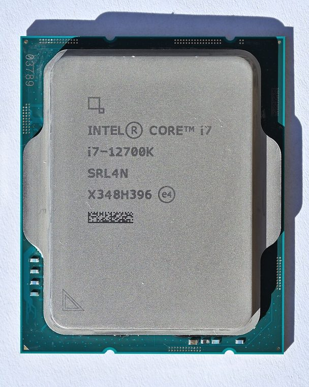

[ MODERN CORE AND RYZEN // IDENTIFIED COMPONENT ]
Intel Core i7-12700K
A 12th-generation Alder Lake desktop processor combining eight Performance-cores and four Efficient-cores in an unlocked LGA1700 package.

MODEL IDENTIFICATION: Intel Core i7-12700K. Read the full top marking/OPN, speed grade, package, and stepping from the physical part; do not transfer specifications across similarly named revisions.
Recorded specifications
| Cataloged part | Intel Core i7-12700K |
|---|---|
| Era / family | Intel 12th-generation Core / Alder Lake-S, released 2021; i7-12700K SKU. |
| Key specifications | 12 cores (8 P-cores + 4 E-cores) / 20 threads; up to 5.0 GHz max turbo; 25 MB Intel Smart Cache; 125 W processor base power and 190 W maximum turbo power; LGA1700; UHD Graphics 770; DDR4-3200 or DDR5-4800, board-dependent. |
| Interface / fit | Requires an LGA1700 motherboard with supporting BIOS; select a board with either DDR4 or DDR5 memory slots, as the CPU does not make the board types interchangeable. Verify cooler mounting hardware and power delivery. |
| Variants / identification | The 12700K has integrated graphics; the 12700KF omits them. K indicates unlocked processor ratio; board chipset and firmware determine overclocking support. Intel lists base and maximum turbo power separately. |
Compatibility and service notes
- Requires an LGA1700 motherboard with supporting BIOS; select a board with either DDR4 or DDR5 memory slots, as the CPU does not make the board types interchangeable. Verify cooler mounting hardware and power delivery.
- The 12700K has integrated graphics; the 12700KF omits them. K indicates unlocked processor ratio; board chipset and firmware determine overclocking support. Intel lists base and maximum turbo power separately.
- Confirm BIOS support, cooler bracket, memory generation, and VRM capacity. Keep firmware, Intel power policy, and cooler details with any sustained workload measurements; socket contact inspection is important on LGA1700.
- Before installation, compare the exact CPU marking with the motherboard maker’s support list, board revision, BIOS minimum, package/socket, power requirements, and memory type. Do not force a package into a socket.
Service & archival record
Confirm BIOS support, cooler bracket, memory generation, and VRM capacity. Keep firmware, Intel power policy, and cooler details with any sustained workload measurements; socket contact inspection is important on LGA1700.
For a collection record, photograph both sides, retain the full model/OPN and date/lot codes, describe package and contact condition, and record the tested motherboard revision, firmware, cooling, memory, and measured operating conditions. Separate measured observations from published limits.
Sources & further reading
- Intel ARK — Core i7-12700K exact SKU specificationsModel-specific manufacturer, technical-document, or product-history reference; consult the exact device marking and board revision.
- 12th Generation Intel Core processor family data sheet — Alder Lake platformModel-specific manufacturer, technical-document, or product-history reference; consult the exact device marking and board revision.
- Intel Alder Lake / 12th-generation Core launch historyModel-specific manufacturer, technical-document, or product-history reference; consult the exact device marking and board revision.
- Gamers Nexus — Intel Core i7-12700K & 12700KF CPU Review, Benchmarks, & Efficiency vs. AMD RyzenIndependent video review; treat as supplementary context, not primary manufacturer documentation.
Third-party mirrors or historical document indexes may host manufacturer-authored manuals. Check document revision and exact model marking; board compatibility remains specific to its maker and firmware.